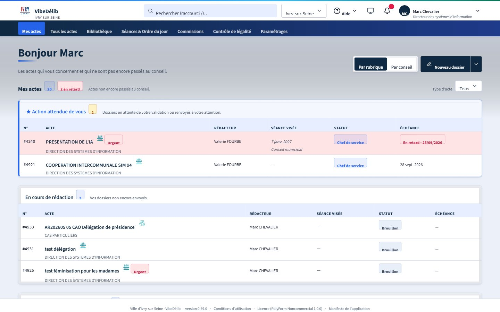
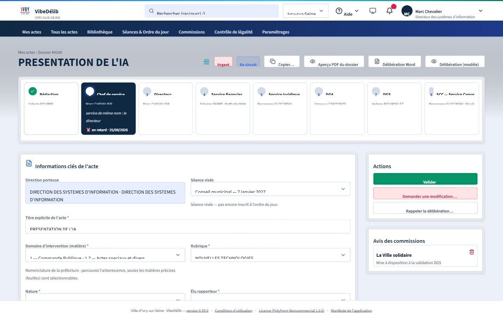
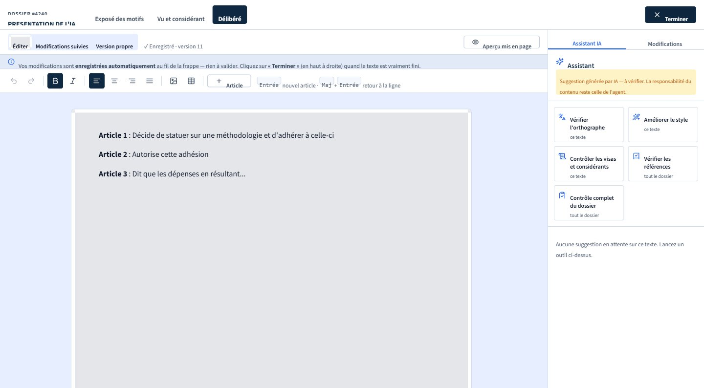
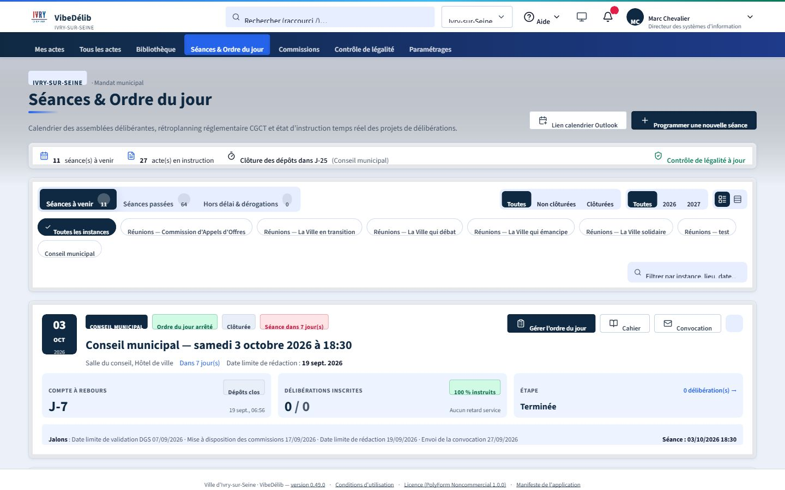
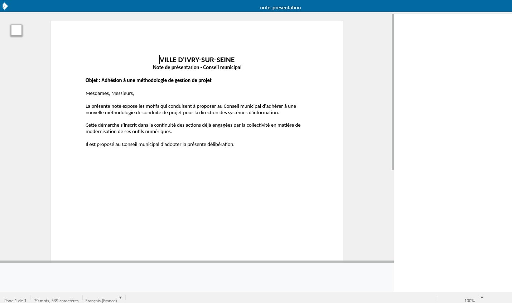

<title>VibeDélib</title>
<meta name="description" content="Le logiciel de gestion des délibérations conçu par une collectivité, pour les collectivités. Gratuit, interopérable, avec une IA sous contrôle humain.">
<style>
  :root{
    color-scheme: light;
    --bg: #f2f3f7;
    --surface: #ffffff;
    --surface-2: #eaecf3;
    --ink: #101a30;
    --ink-soft: #4c5670;
    --ink-faint: #7982994d;
    --line: #d7dae4;
    --navy: #16264a;
    --navy-deep: #0a1226;
    --navy-tint: #e7ebf5;
    --accent: #ab3a2b;
    --accent-ink: #ab3a2b;
    --accent-soft: #f4e2dd;
    --green: #1f7a4d;
    --green-soft: #dcefe3;
    --shadow: 0 1px 2px rgba(16,26,48,.04), 0 12px 32px -16px rgba(16,26,48,.18);
    --serif: "Fraunces", "Iowan Old Style", Georgia, serif;
    --sans: "Public Sans", "Segoe UI", system-ui, sans-serif;
    --mono: "IBM Plex Mono", ui-monospace, "SF Mono", Consolas, monospace;
  }
  @media (prefers-color-scheme: dark){
    :root:not([data-theme="light"]){
      color-scheme: dark;
      --bg: #0b1120;
      --surface: #121a2d;
      --surface-2: #1a2338;
      --ink: #eef1f8;
      --ink-soft: #aab3c9;
      --ink-faint: #aab3c94d;
      --line: #283252;
      --navy: #a9c0f0;
      --navy-deep: #05070d;
      --navy-tint: #182242;
      --accent: #e18468;
      --accent-ink: #f0a68d;
      --accent-soft: #2c1d1a;
      --green: #57c087;
      --green-soft: #163826;
      --shadow: 0 1px 2px rgba(0,0,0,.3), 0 20px 44px -20px rgba(0,0,0,.6);
    }
  }
  :root[data-theme="dark"]{
    color-scheme: dark;
    --bg: #0b1120;
    --surface: #121a2d;
    --surface-2: #1a2338;
    --ink: #eef1f8;
    --ink-soft: #aab3c9;
    --ink-faint: #aab3c94d;
    --line: #283252;
    --navy: #a9c0f0;
    --navy-deep: #05070d;
    --navy-tint: #182242;
    --accent: #e18468;
    --accent-ink: #f0a68d;
    --accent-soft: #2c1d1a;
    --green: #57c087;
    --green-soft: #163826;
    --shadow: 0 1px 2px rgba(0,0,0,.3), 0 20px 44px -20px rgba(0,0,0,.6);
  }

  *{box-sizing:border-box;}
  body{
    margin:0;
    background:var(--bg);
    color:var(--ink);
    font-family:var(--sans);
    font-size:16px;
    line-height:1.55;
    -webkit-font-smoothing:antialiased;
  }
  img{max-width:100%; display:block;}
  a{color:inherit;}
  h1,h2,h3{font-family:var(--serif); font-weight:600; letter-spacing:-.01em; text-wrap:balance; margin:0;}
  .wrap{max-width:1120px; margin:0 auto; padding-inline:24px;}
  .eyebrow{
    font-family:var(--mono); font-size:12.5px; letter-spacing:.09em; text-transform:uppercase;
    color:var(--accent-ink); display:flex; align-items:center; gap:10px; margin-bottom:14px;
  }
  .eyebrow::before{content:""; width:22px; height:1.5px; background:var(--accent); display:inline-block;}
  section{padding-block:clamp(56px,9vw,108px);}
  .lede{font-size:clamp(17px,1.9vw,19px); color:var(--ink-soft); max-width:60ch;}

  /* header */
  header.site{
    position:sticky; top:env(safe-area-inset-top,0px); z-index:40;
    background:color-mix(in srgb, var(--bg) 88%, transparent);
    backdrop-filter:blur(10px);
    border-bottom:1px solid var(--line);
  }
  header.site .row{
    display:flex; align-items:center; justify-content:space-between; gap:16px;
    padding-block:14px;
  }
  .brand{display:flex; align-items:center; gap:10px; font-family:var(--serif); font-weight:600; font-size:19px;}
  .brand .mark{
    width:30px; height:30px; border-radius:7px; background:var(--navy); color:#fff;
    display:flex; align-items:center; justify-content:center; font-family:var(--mono); font-size:13px; font-weight:600;
    flex-shrink:0;
  }
  nav.primary{display:flex; gap:22px; font-size:14.5px; color:var(--ink-soft);}
  nav.primary a{text-decoration:none; white-space:nowrap;}
  nav.primary a:hover{color:var(--ink);}
  .btn{
    font-family:var(--sans); font-size:14.5px; font-weight:600; border-radius:8px;
    padding:10px 18px; border:1px solid transparent; cursor:pointer; text-decoration:none;
    display:inline-flex; align-items:center; gap:8px; white-space:nowrap;
  }
  .btn-primary{background:var(--navy); color:#fff;}
  .btn-primary:hover{background:var(--navy-deep);}
  .btn-ghost{background:transparent; border-color:var(--line); color:var(--ink);}
  .btn-ghost:hover{border-color:var(--ink-soft);}

  /* hero */
  .hero{padding-top:clamp(52px,8vw,88px); padding-bottom:0;}
  .hero-grid{display:grid; grid-template-columns:1.05fr .95fr; gap:56px; align-items:center;}
  .hero h1{font-size:clamp(34px,4.6vw,54px); line-height:1.06;}
  .hero h1 em{font-style:normal; color:var(--accent-ink);}
  .tag-row{display:flex; flex-wrap:wrap; gap:10px; margin-top:26px;}
  .tag{
    font-family:var(--mono); font-size:12.5px; letter-spacing:.03em;
    border:1px solid var(--line); border-radius:999px; padding:6px 13px;
    color:var(--ink-soft); background:var(--surface);
  }
  .tag.on{color:var(--green); border-color:var(--green-soft); background:var(--green-soft);}
  .cta-row{display:flex; flex-wrap:wrap; gap:12px; margin-top:32px;}

  .browser-frame{
    background:var(--surface); border:1px solid var(--line); border-radius:14px;
    box-shadow:var(--shadow); overflow:hidden;
  }
  .browser-frame .bar{
    display:flex; align-items:center; gap:6px; padding:10px 12px; border-bottom:1px solid var(--line);
    background:var(--surface-2);
  }
  .browser-frame .bar span{width:9px; height:9px; border-radius:50%; background:var(--ink-faint);}
  .browser-frame img{width:100%; height:auto; display:block;}
  .frame-cap{
    font-family:var(--mono); font-size:12px; color:var(--ink-soft); margin-top:10px;
    display:flex; justify-content:space-between; gap:12px;
  }

  /* section headers */
  .sec-head{max-width:64ch; margin-bottom:44px;}
  .sec-head h2{font-size:clamp(26px,3.2vw,36px);}

  /* feature grid */
  .grid-9{display:grid; grid-template-columns:repeat(3,1fr); gap:1px; background:var(--line); border:1px solid var(--line); border-radius:14px; overflow:hidden;}
  .grid-6{display:grid; grid-template-columns:repeat(2,1fr); gap:1px; background:var(--line); border:1px solid var(--line); border-radius:14px; overflow:hidden;}
  .feat{background:var(--surface); padding:28px 26px; display:flex; flex-direction:column; gap:10px;}
  .feat .num{font-family:var(--mono); font-size:12px; color:var(--ink-faint);}
  .feat h3{font-family:var(--sans); font-size:16.5px; font-weight:700;}
  .feat p{margin:0; color:var(--ink-soft); font-size:14.5px;}

  /* showcase rows */
  .showcase{display:flex; flex-direction:column; gap:96px;}
  .show-row{display:grid; grid-template-columns:.86fr 1.14fr; gap:52px; align-items:center;}
  .show-row.rev{grid-template-columns:1.14fr .86fr;}
  .show-row.rev .show-text{order:2;}
  .show-row.rev .show-media{order:1;}
  .show-text h3{font-size:clamp(21px,2.4vw,27px); margin-bottom:12px;}
  .show-text p{color:var(--ink-soft); margin:0 0 10px;}
  .show-list{margin:16px 0 0; padding:0; list-style:none; display:flex; flex-direction:column; gap:8px;}
  .show-list li{padding-left:20px; position:relative; color:var(--ink-soft); font-size:14.5px;}
  .show-list li::before{content:"—"; position:absolute; left:0; color:var(--accent);}

  /* manifesto */
  .manifesto{
    background:var(--navy); color:#eef1f8; border-radius:20px; padding:clamp(36px,6vw,64px);
  }
  .manifesto .eyebrow{color:#f0a68d;}
  .manifesto h2{color:#fff; font-size:clamp(26px,3.4vw,38px); max-width:20ch;}
  .manifesto-grid{display:grid; grid-template-columns:1.1fr .9fr; gap:48px; margin-top:34px; align-items:start;}
  .manifesto p{color:#c7cee3; margin:0 0 16px; max-width:56ch;}
  .principle-list{display:flex; flex-direction:column; gap:22px;}
  .principle{border-top:1px solid rgba(255,255,255,.14); padding-top:18px;}
  .principle h4{margin:0 0 6px; font-family:var(--sans); font-size:15px; font-weight:700; color:#fff;}
  .principle p{color:#aeb7d1; font-size:14px; margin:0;}

  /* free banner */
  .free{
    display:grid; grid-template-columns:auto 1fr auto; align-items:center; gap:28px;
    background:var(--accent-soft); border:1px solid color-mix(in srgb, var(--accent) 30%, var(--line));
    border-radius:16px; padding:clamp(24px,4vw,40px);
  }
  .free .price{font-family:var(--serif); font-size:clamp(30px,4vw,44px); color:var(--accent-ink); white-space:nowrap;}
  .free p{margin:0; color:var(--ink-soft); max-width:52ch;}

  /* contact */
  .contact-card{
    background:var(--surface); border:1px solid var(--line); border-radius:16px;
    padding:clamp(30px,5vw,52px); display:grid; grid-template-columns:1.1fr .9fr; gap:40px; align-items:center;
    box-shadow:var(--shadow);
  }
  .mail-box{
    display:flex; align-items:center; gap:10px; background:var(--surface-2); border:1px solid var(--line);
    border-radius:10px; padding:14px 16px; font-family:var(--mono); font-size:15px;
  }
  .mail-box button{
    margin-left:auto; font-family:var(--sans); font-size:13px; font-weight:600; border:1px solid var(--line);
    background:var(--surface); color:var(--ink); border-radius:7px; padding:7px 12px; cursor:pointer;
  }
  .mail-box button:hover{border-color:var(--ink-soft);}
  .note{font-size:13px; color:var(--ink-soft); margin-top:12px;}

  footer{border-top:1px solid var(--line); padding-block:28px; margin-top:20px;}
  footer .row{display:flex; justify-content:space-between; flex-wrap:wrap; gap:12px; font-size:13px; color:var(--ink-soft);}

  @media (max-width:860px){
    .hero-grid, .manifesto-grid, .contact-card{grid-template-columns:1fr;}
    .grid-9{grid-template-columns:1fr 1fr;}
    .grid-6{grid-template-columns:1fr;}
    .show-row, .show-row.rev{grid-template-columns:1fr;}
    .show-row.rev .show-text, .show-row.rev .show-media{order:initial;}
    nav.primary{display:none;}
    .free{grid-template-columns:1fr;}
  }
  @media (max-width:560px){
    .grid-9{grid-template-columns:1fr;}
  }
</style>

<header class="site">
  <div class="wrap row">
    <div class="brand"><span class="mark">VD</span>VibeDélib</div>
    <nav class="primary">
      <a href="#logiciel">Le logiciel</a>
      <a href="#difference">Ce qu'il change</a>
      <a href="#captures">En images</a>
      <a href="#ecosysteme">Intégrations</a>
      <a href="#technique">Le socle technique</a>
      <a href="#territoriaux">Fait par des territoriaux</a>
      <a href="#gratuit">Gratuit</a>
    </nav>
    <a class="btn btn-primary" href="#contact">Nous écrire</a>
  </div>
</header>

<main>
  <section class="hero">
    <div class="wrap">
      <div class="hero-grid">
        <div>
          <div class="eyebrow">Gestion des délibérations</div>
          <h1>Le logiciel des actes municipaux, <em>écrit par une collectivité</em> pour les collectivités.</h1>
          <p class="lede" style="margin-top:20px;">De la rédaction d'un projet de délibération jusqu'à la télétransmission au contrôle de légalité, VibeDélib suit un acte de bout en bout — circuit de validation, commissions, séances, espace élus. Conçu avec le service qui l'utilise chaque jour, pas vendu à distance.</p>
          <div class="tag-row">
            <span class="tag on">Gratuit</span>
            <span class="tag on">Sans abonnement</span>
            <span class="tag">Conçu par une DSI territoriale</span>
            <span class="tag">RGPD dès la conception</span>
          </div>
          <div class="cta-row">
            <a class="btn btn-primary" href="#contact">Nous écrire</a>
            <a class="btn btn-ghost" href="#captures">Voir l'outil en images</a>
          </div>
        </div>
        <div>
          <div class="browser-frame">
            <div class="bar"><span></span><span></span><span></span></div>
            
          </div>
          <div class="frame-cap"><span>Tableau de bord d'un rédacteur</span><span>Ville d'Ivry-sur-Seine</span></div>
        </div>
      </div>
    </div>
  </section>

  <section id="logiciel">
    <div class="wrap">
      <div class="sec-head">
        <div class="eyebrow">Le principe</div>
        <h2>Le logiciel s'adapte au service, pas l'inverse.</h2>
        <p class="lede" style="margin-top:16px;">Beaucoup de logiciels de délibérations ont été conçus une fois pour toutes, puis vendus tels quels à des centaines de communes différentes : fichiers Word à télécharger et reposer, circuits figés, écrans qu'il faut contourner. VibeDélib est parti de l'inverse — observer comment un dossier circule vraiment dans une collectivité (rédacteur, chef de service, directeur, service juridique, DGA, DGS, service des assemblées), puis construire l'outil autour de ce circuit, avec la possibilité de le reparamétrer entièrement pour une autre commune.</p>
      </div>

      <div class="grid-9">
        <div class="feat"><div class="num">01</div><h3>Un seul outil, tout le cycle</h3><p>Rédaction, circuit de validation, commissions, séances et ordre du jour, convocation des élus, votes, télétransmission, recherche : un dossier ne change jamais de logiciel.</p></div>
        <div class="feat"><div class="num">02</div><h3>Interopérable nativement</h3><p>Annuaire des agents, fiches élus, envoi de mails, IA interne, télétransmission S²LOW : VibeDélib se branche sur ce que la collectivité a déjà, sans jamais ressaisir une donnée.</p></div>
        <div class="feat"><div class="num">03</div><h3>Rien n'est jamais écrasé</h3><p>Chaque modification d'un exposé des motifs ou d'une délibération est tracée, datée et attribuée à son auteur — un suivi des modifications qui accompagne l'acte de bout en bout, pas un simple export.</p></div>
        <div class="feat"><div class="num">04</div><h3>Une IA qui propose, jamais qui décide</h3><p>Quatre niveaux d'assistance — orthographe, style, visas et considérants, contrôle complet — dont chaque suggestion doit être acceptée une par une par l'agent, qui reste seul responsable du texte.</p></div>
        <div class="feat"><div class="num">05</div><h3>Un circuit propre à chaque commune</h3><p>Étapes, délégations, délais de rédaction, paliers de relance : le circuit de validation est entièrement paramétrable, sans toucher au code, et peut différer d'un organisme à l'autre.</p></div>
        <div class="feat"><div class="num">06</div><h3>Plusieurs organismes, une seule installation</h3><p>Ville, CCAS, syndicat : chacun garde ses élus, son circuit, sa numérotation et sa télétransmission, avec un seul annuaire d'agents partagé.</p></div>
        <div class="feat"><div class="num">07</div><h3>Un espace élus protégé</h3><p>Les élus consultent et annotent les projets avant la séance depuis un frontend dédié, isolé en zone démilitarisée (DMZ), sans jamais toucher à la base de production.</p></div>
        <div class="feat"><div class="num">08</div><h3>Un tutoriel dès la première connexion</h3><p>Chaque profil — rédacteur, valideur, élu, administrateur — découvre l'outil avec un parcours de prise en main pensé pour lui, pas une notice PDF de quarante pages.</p></div>
        <div class="feat"><div class="num">09</div><h3>Sécurité et RGPD dès la conception</h3><p>Journal d'audit immuable, isolation stricte des données entre organismes, chiffrement des annotations privées des élus, sauvegardes testées.</p></div>
      </div>
    </div>
  </section>

  <section id="difference">
    <div class="wrap">
      <div class="sec-head">
        <div class="eyebrow">Ce qu'il change</div>
        <h2>Ce que VibeDélib fait, que les logiciels du marché ne font pas.</h2>
      </div>
      <div class="showcase">
        <div class="show-row">
          <div class="show-text">
            <h3>Un circuit de validation qu'on voit, qu'on suit, qu'on relance</h3>
            <p>Chaque acte affiche la totalité de son circuit — huit étapes possibles dans cet exemple, de la rédaction au service des assemblées — avec, à chaque instant, qui détient le dossier et depuis quand. Un retard se voit tout de suite, une délégation reste tracée, et le circuit lui-même se reconfigure sans ticket à ouvrir chez un éditeur.</p>
            <ul class="show-list">
              <li>Étapes, délégations et retours en arrière paramétrables par l'administrateur</li>
              <li>Une échéance de rédaction par séance, avec relances et dérogations</li>
              <li>Un numéro, un statut et un historique pour chaque dossier</li>
            </ul>
          </div>
          <div class="show-media">
            <div class="browser-frame">
              <div class="bar"><span></span><span></span><span></span></div>
              
            </div>
          </div>
        </div>

        <div class="show-row rev">
          <div class="show-text">
            <h3>Une assistance IA qui vérifie, sans jamais écrire à la place de l'agent</h3>
            <p>Le panneau Assistant propose de vérifier l'orthographe, d'améliorer le style, de contrôler les visas et considérants ou de lancer un contrôle complet du dossier. Chaque suggestion s'affiche à part, avec sa source ; l'agent l'accepte ou l'ignore, et seule une action explicite la fait entrer dans le texte, marquée « avec assistance IA ».</p>
            <ul class="show-list">
              <li>Références juridiques vérifiées par du code contre une bibliothèque de visas, pas affirmées par un modèle</li>
              <li>Aucun texte de délibération ne sort du système d'information</li>
              <li>Désactivable fonction par fonction, sans jamais bloquer la rédaction</li>
            </ul>
          </div>
          <div class="show-media">
            <div class="browser-frame">
              <div class="bar"><span></span><span></span><span></span></div>
              
            </div>
          </div>
        </div>

        <div class="show-row">
          <div class="show-text">
            <h3>Le calendrier réel des séances, pas un tableur à jour la veille</h3>
            <p>Comptes à rebours de dépôt, jalons réglementaires, part des délibérations instruites, état de la télétransmission : tout se lit d'un coup d'œil, séance par séance et instance par instance, du Conseil municipal aux commissions.</p>
            <ul class="show-list">
              <li>Rétroplanning CGCT calculé automatiquement à partir de la date de séance</li>
              <li>Gestion de l'ordre du jour, du cahier de séance et des convocations</li>
              <li>Une vue par organisme et par instance, sans ressaisie d'un calendrier à l'autre</li>
            </ul>
          </div>
          <div class="show-media">
            <div class="browser-frame">
              <div class="bar"><span></span><span></span><span></span></div>
              
            </div>
          </div>
        </div>
      </div>
    </div>
  </section>

  <section id="ecosysteme">
    <div class="wrap">
      <div class="sec-head">
        <div class="eyebrow">Intégrations</div>
        <h2>Un dossier, mais un écosystème complet autour.</h2>
        <p class="lede" style="margin-top:16px;">VibeDélib ne s'arrête pas à la rédaction : il se branche sur les outils qui font tourner le cycle de vie d'un acte, du premier brouillon jusqu'à la signature et la préfecture.</p>
      </div>

      <div class="grid-6">
        <div class="feat">
          <h3>Bureautique intégrée, au choix</h3>
          <p>Une annexe Word ou Excel s'édite directement dans le navigateur, sans rien installer : deux moteurs interchangeables selon l'organisme — OnlyOffice ou Collabora Online — et le même enregistrement passe toujours par le contrôle de version, la conversion PDF et l'audit du dossier.</p>
        </div>
        <div class="feat">
          <h3>Un collecteur automatique d'arrêtés</h3>
          <p>Un arrêté déposé dans un dossier réseau surveillé est repris seul par l'outil : nature, matière, rubrique et direction porteuse proposées par l'IA, circuit lancé, puis envoi au parapheur en fin de circuit — sans qu'un agent ait besoin d'ouvrir un dossier.</p>
        </div>
        <div class="feat">
          <h3>Un portail élus dédié</h3>
          <p>Les élus consultent leurs dossiers, les annotent et partagent leurs remarques avant la séance depuis un portail isolé en zone démilitarisée (DMZ), sans jamais toucher à la base de production.</p>
        </div>
        <div class="feat">
          <h3>Envoi au contrôle de légalité</h3>
          <p>Une fois l'acte voté, la télétransmission vers la préfecture suit le protocole S²LOW — préparation puis confirmation — avec le suivi de l'accusé de réception directement depuis le dossier.</p>
        </div>
        <div class="feat">
          <h3>Des notifications qui relancent, puis s'arrêtent</h3>
          <p>Chaque échéance a sa règle : rappel au valideur, escalade à son supérieur passé un délai, arrêt automatique dès que l'action attendue est faite — par mail, notification dans l'outil ou SMS pour l'urgent.</p>
        </div>
        <div class="feat">
          <h3>Signature via le parapheur électronique</h3>
          <p>En fin de circuit, l'acte part vers le parapheur électronique — un autre outil de la même famille logicielle — pour la signature : suivi de l'état (à signer, signé, refusé) et journal des échanges consultables depuis le dossier.</p>
        </div>
      </div>

      <div class="showcase" style="margin-top:96px;">
        <div class="show-row">
          <div class="show-text">
            <h3>Une annexe Word, éditée sans quitter le dossier</h3>
            <p>Ici, une note de présentation déposée en annexe s'ouvre directement dans Collabora Online, l'un des deux moteurs bureautiques intégrés — ruban, styles et mise en page complets, dans le navigateur, sans poste équipé de Word.</p>
            <ul class="show-list">
              <li>OnlyOffice ou Collabora Online, au choix de l'organisme, tous deux open source</li>
              <li>Chaque enregistrement crée une version, reconvertit le PDF et s'inscrit dans l'audit du dossier</li>
              <li>Le moteur ne voit jamais la base de l'application : il ne reçoit que le fichier à éditer</li>
            </ul>
          </div>
          <div class="show-media">
            <div class="browser-frame">
              <div class="bar"><span></span><span></span><span></span></div>
              
            </div>
          </div>
        </div>
      </div>
    </div>
  </section>

  <section id="technique">
    <div class="wrap">
      <div class="sec-head">
        <div class="eyebrow">Le socle technique</div>
        <h2>Une stack ouverte, dockerisée, pensée pour durer.</h2>
        <p class="lede" style="margin-top:16px;">Les choix techniques ne sont pas neutres : ce sont eux qui décident si une collectivité reste maîtresse de son outil dans dix ans. VibeDélib s'appuie sur ce qui se fait de mieux aujourd'hui en logiciel ouvert — pas par principe, mais parce que c'est objectivement ce qui offre le plus de robustesse, de portabilité et de recul.</p>
      </div>

      <div class="grid-6">
        <div class="feat">
          <h3>Node.js, Express, React, TypeScript</h3>
          <p>Les technologies web les plus utilisées et les mieux outillées du moment : le plus grand vivier de compétences pour en reprendre la maintenance, et le typage strict qui élimine des classes entières de bugs avant même l'exécution.</p>
        </div>
        <div class="feat">
          <h3>PostgreSQL, sans licence</h3>
          <p>La base de données open source la plus aboutie du marché — recherche plein texte, JSON natif, extensions — sans coût de licence, sans audit de conformité, et sans hausse tarifaire décidée par un éditeur.</p>
        </div>
        <div class="feat">
          <h3>Dockerisé de bout en bout</h3>
          <p>L'application se déploie avec Docker Compose, à l'identique en test et en production : installer une nouvelle instance ou migrer vers un autre serveur tient en une commande, pas en un projet.</p>
        </div>
        <div class="feat">
          <h3>Archivage dans une vraie GED</h3>
          <p>Les documents produits sont archivés dans Alfresco, système de gestion électronique de documents open source de référence, avec un plan de classement — pas un simple dossier de fichiers qui grossit sans règle.</p>
        </div>
        <div class="feat">
          <h3>Sauvegarde automatique et vérifiée</h3>
          <p>Chaque nuit, une sauvegarde cohérente de la base et des fichiers part vers un dossier réseau, avec empreinte de contrôle et rétention automatique — sans outil externe à installer ni geste manuel à ne pas oublier.</p>
        </div>
        <div class="feat">
          <h3>Aucun fournisseur incontournable</h3>
          <p>Authentification, messagerie, archivage, signature, bureautique : chaque brique externe se branche par une interface standard et se remplace sans toucher au reste du code — l'inverse d'un logiciel qui impose son fournisseur.</p>
        </div>
      </div>
    </div>
  </section>

  <section id="territoriaux">
    <div class="wrap">
      <div class="manifesto">
        <div class="eyebrow">Notre conviction</div>
        <h2>Fait par des territoriaux, pour des territoriaux.</h2>
        <div class="manifesto-grid">
          <div>
            <p>VibeDélib n'a pas été conçu dans les bureaux d'un éditeur puis vendu à des centaines de communes qui doivent ensuite s'y plier. Il a été écrit dans une direction des systèmes d'information de collectivité, avec le service qui gère réellement les délibérations — celui qui connaît le circuit, les délais, les urgences et les exceptions qu'aucune fiche produit ne prévoit.</p>
            <p>Ce n'est pas un jugement sur les éditeurs : certains font bien leur métier. C'est une conviction simple — les outils du quotidien des services publics gagnent à être conçus avec les agents qui les utilisent, pas seulement livrés à distance selon une feuille de route qu'ils ne voient jamais.</p>
          </div>
          <div class="principle-list">
            <div class="principle">
              <h4>Co-construit, pas seulement livré</h4>
              <p>Chaque écran est né d'une discussion avec le service des assemblées qui l'utilise, pas d'une maquette générique.</p>
            </div>
            <div class="principle">
              <h4>Construit avec l'IA, sous supervision humaine</h4>
              <p>Tests, revue de code et traçabilité comme sur tout développement sérieux — l'intelligence artificielle accélère l'écriture, elle ne remplace pas le contrôle.</p>
            </div>
            <div class="principle">
              <h4>Pensé pour être transmis</h4>
              <p>Le code appartient à la collectivité qui l'a fait naître, documenté pour qu'une autre équipe puisse le reprendre — jamais enfermé dans un format propriétaire.</p>
            </div>
          </div>
        </div>
      </div>
    </div>
  </section>

  <section id="gratuit">
    <div class="wrap">
      <div class="free">
        <div class="price">0&nbsp;€</div>
        <p><strong style="color:var(--ink);">Gratuit. Aucun abonnement, aucune licence, aucun coût par fonctionnalité.</strong> VibeDélib est né d'un besoin de collectivité, pas d'un modèle commercial à rentabiliser — il se partage comme il a été construit.</p>
        <a class="btn btn-primary" href="#contact">Nous écrire</a>
      </div>
    </div>
  </section>

  <section id="contact">
    <div class="wrap">
      <div class="contact-card">
        <div>
          <div class="eyebrow">Contact</div>
          <h2 style="font-size:clamp(24px,3vw,32px);">Envie de VibeDélib dans votre collectivité ?</h2>
          <p class="lede" style="margin-top:14px;">Écrivez-nous : nous en parlons volontiers, montrons l'outil et regardons ensemble ce qu'il faudrait adapter à votre circuit.</p>
        </div>
        <div>
          <div class="mail-box">
            <span id="mail-text">dev@fbc.fr</span>
            <button type="button" id="copy-btn">Copier</button>
          </div>
          <p class="note">Pas de dépôt de code public pour l'instant — passez par ce contact plutôt que par un lien de dépôt.</p>
        </div>
      </div>
    </div>
  </section>
</main>

<footer>
  <div class="wrap row">
    <span>VibeDélib — un logiciel de gestion des délibérations conçu par des agents territoriaux.</span>
    <span>Captures d'écran : instance de la Ville d'Ivry-sur-Seine.</span>
  </div>
</footer>

<link rel="stylesheet" href="https://fonts.googleapis.com/css2?family=Fraunces:opsz,wght@9..144,500;9..144,600&family=Public+Sans:wght@400;500;600;700&family=IBM+Plex+Mono:wght@400;500&display=swap">
<script>
  (function(){
    var btn = document.getElementById('copy-btn');
    var txt = document.getElementById('mail-text');
    if (!btn) return;
    btn.addEventListener('click', function(){
      var value = txt.textContent.trim();
      function fallback(){
        try{
          var r = document.createRange();
          r.selectNodeContents(txt);
          var sel = window.getSelection();
          sel.removeAllRanges();
          sel.addRange(r);
        }catch(e){}
      }
      if (navigator.clipboard && navigator.clipboard.writeText) {
        navigator.clipboard.writeText(value).then(function(){
          btn.textContent = 'Copié';
          setTimeout(function(){ btn.textContent = 'Copier'; }, 1600);
        }).catch(fallback);
      } else {
        fallback();
      }
    });
  })();
</script>
